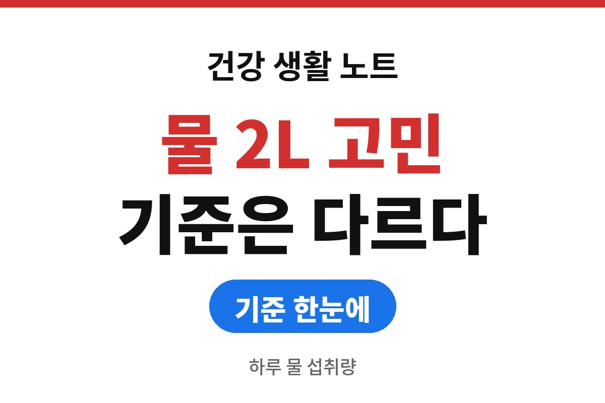
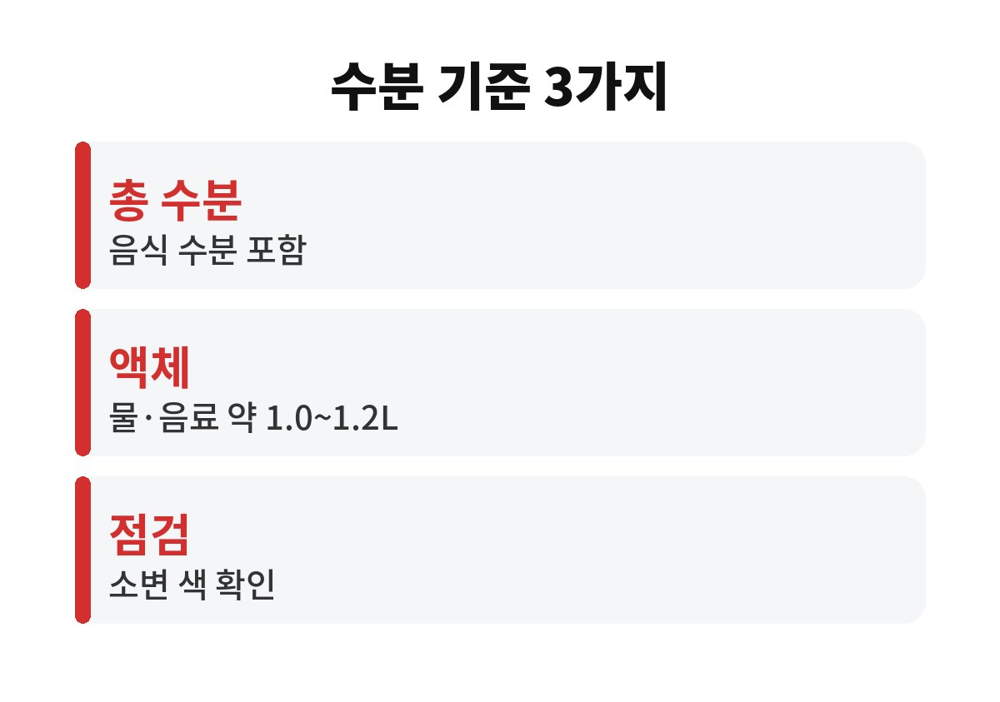
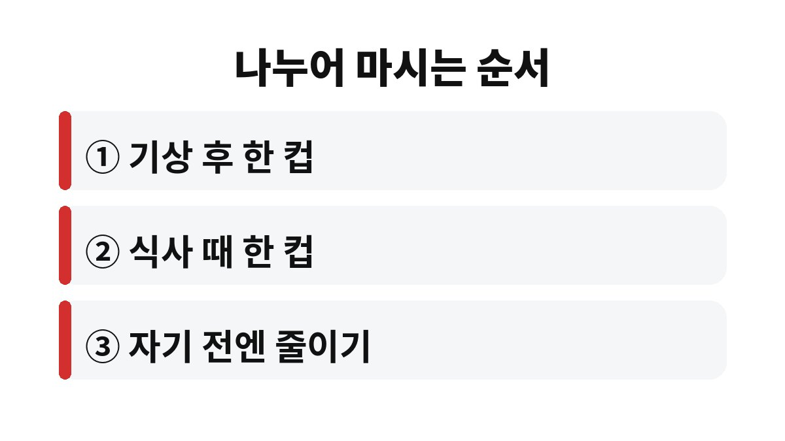

하루 물 섭취량은 모두에게 똑같은 2L가 아니라 성별과 나이에 따라 다르고, 그 수치에는 음식에 들어 있는 수분도 들어간다.
보건복지부와 한국영양학회의 한국인 영양소 섭취기준(2020)은 수분을 음식, 물, 음료로 나누어 충분섭취량을 제시한다.
컵 수를 세며 억지로 채우던 습관을 내려놓아도 되는 이유가 여기에 있다.
2L라는 숫자는 흔히 물만 따로 마시는 양으로 받아들여진다.
그러나 기준에서 말하는 수분은 밥, 국, 과일 같은 음식 속 수분까지 합친 값이다.
음식으로 들어오는 수분이 적지 않아서 물과 음료로 채울 몫은 그보다 훨씬 줄어든다.
건강한 성인은 갈증과 소변 색으로 부족 여부를 대체로 가늠할 수 있다.
한꺼번에 많이 들이켜는 것보다 식사 때와 활동 사이에 나누어 마시는 편이 몸에 부담이 덜하다.
점심에 국물 있는 식사를 하고 과일을 곁들인 날이라면 물 한 컵만 더해도 하루 몫을 거의 채우는 셈이다.
반대로 샐러드와 빵으로 때우는 날에는 음식 속 수분이 적어 물 컵이 더 필요하다.
같은 사람도 먹는 것에 따라 필요한 물의 양이 매일 달라진다.
커피나 차도 액체이므로 수분 섭취에 보탬이 된다.
다만 카페인이 들어 있어 늦은 오후 이후에는 잠을 얕게 만들 수 있고, 당이 든 음료는 당류 섭취를 함께 늘린다.
그래서 기본은 물로 두고 나머지를 보태는 방식이 낫다.
한 번에 500mL를 들이켜면 화장실만 자주 가게 되고, 몸에 머무는 수분은 오히려 적다고 느끼는 사람이 많다.
한국인 영양소 섭취기준(2020)은 19~29세 성인 기준으로 남성 하루 약 2.6L, 여성 약 2.1L를 음식과 음료를 합친 총 수분으로 제시한다.
이 가운데 물과 음료 같은 액체로 채울 양은 남성 약 1.2L, 여성 약 1.0L 수준이다.
연령대가 달라지면 수치도 조금씩 달라지므로 본인 연령은 기준표에서 직접 확인하는 것이 정확하다.
공식 기준과 내 체감이 어긋나는 때도 있다.
점심 한 끼를 국밥으로 먹은 날과 샌드위치로 먹은 날의 갈증이 다른 것이 그 예다.
남성과 여성의 차이는 체격과 식사량의 차이를 반영한 값이다.
여름철 땀이 많은 날, 난방이 센 실내, 임신과 수유 시기에는 이 수치보다 더 필요할 수 있다.
표의 숫자는 건강한 성인의 평균적인 충분섭취량이라서 하루도 어긋나면 안 되는 목표가 아니라 방향을 잡는 눈금으로 쓰는 편이 맞다.
| 구분 | 음식 포함 총 수분 | 물·음료 등 액체 |
|---|---|---|
| 19~29세 남성 | 약 2.6L | 약 1.2L |
| 19~29세 여성 | 약 2.1L | 약 1.0L |

예를 들어 사무실에서 하루 종일 커피만 마시다 퇴근길에 입이 마르고 두통이 오는 날이 있다.
이런 날은 오전 중에 물 한 컵을 끼워 넣기만 해도 오후가 달라진다.
순서는 한 번에 다 지키려 하지 않아도 되고, 두세 가지만 습관이 되면 충분하다.

식사 때 한 컵이 어렵다면 물 대신 보리차처럼 당이 없는 차를 쓰는 방법도 있다.
당이 든 음료로 수분을 채우면 당류 섭취가 함께 늘어난다는 점은 기억해 둔다.
심장이나 신장 질환으로 수분 제한 지시를 받은 사람은 위 수치를 따르지 않는다.
이때는 진료받는 병원에서 정해 준 양이 우선이다.
어지럼, 입마름, 소변량 감소가 며칠째 계속될 때도 마시는 양을 늘리기보다 먼저 진료를 받는다.
나이가 많은 어르신은 갈증을 늦게 느끼는 경우가 있어 시간을 정해 한 컵씩 마시는 방법이 맞는 사람도 있다.
반대로 이미 부종이 있거나 소변량 조절이 필요한 병이 있다면 같은 방법이 몸에 부담이 된다.
내 상태가 어느 쪽인지 모르겠으면 다음 진료 때 하루 물 양을 의사에게 물어보는 것이 가장 빠르다.
운동 후 수분 보충은 땀으로 빠진 양을 생각해 물을 한 모금씩 자주 나누어 마시는 쪽이 낫다.
한 번에 많이 마시면 배가 더부룩해져 다음 운동까지 불편함이 남는다.
오늘은 컵 수 대신 소변 색과 식사 때 한 컵부터 확인해 본다.
기준표에서 내 연령대 수치를 한 번 찾아보는 것으로 충분하다.
물병을 눈에 보이는 책상 위에 두는 단순한 방법이 컵 수를 세는 것보다 오래 간다.
참고 자료: 보건복지부·한국영양학회 「2020 한국인 영양소 섭취기준」(2026년 11월 확인)
※ 2026년 기준 공식 기준을 바탕으로 정리한 일반 건강 정보이며, 증상이 계속되거나 지병이 있다면 전문의와 상담하길 바란다.